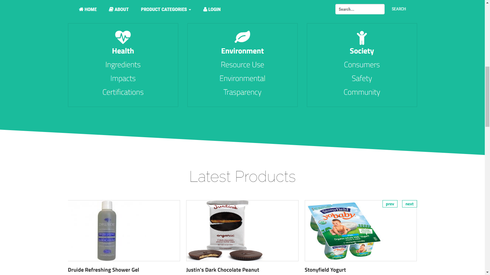
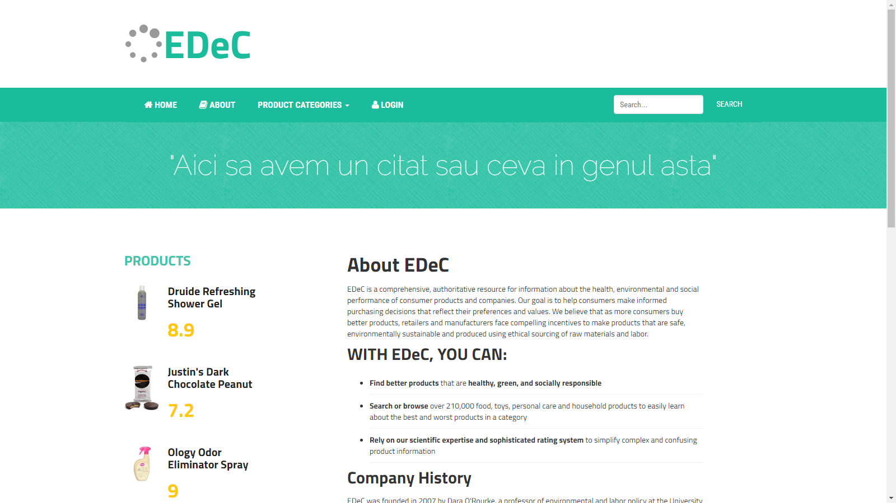

Ethical Decisions for Consumers
Cuprins:
Descriere
Acest proiect îşi propune dezvoltarea unui site, ce oferă asistență consumatorilor privind deciziile de achiziție a unor bunuri/servicii într-un mod etic. Acestora li se vor pune la dispoziție numeroase liste cu produse din diferite categorii cum ar fi: îmbrăcăminte, mâncare, electronice etc. Aplicația va oferi, de asemenea, statistici privind cele mai dezirabile/indezirabile resurse, utilizatorii cu cele mai multe/puține restricții, persoanele având preferințe similare.
Site-ul, în prim plan, va oferi posibilitatea de autentificare iar în cazul în care utilizatorul nu are un cont creat, i se va oferi posibilitatea de a-și crea unul - pentru aceasta, va trebui să completeze câteva câmpuri obligatorii.
Fiecare client va avea la dispoziție mecanisme de căutare/filtrare/prezentare multicriterială, care îi va ajuta să selecteze doar anumite categorii dorite de produse. Un exemplu de căutare ar putea fi: produsele cele mai prefrate de clienti din categoria electrocasnice.
Multe dintre informațiile acestea vor putea fi importate/exportate pe baza unor resurse disponibile în formatele CSV și XML, însă, numai utilizatorilor autentificați (administratorilor), deoarece această funcționalitate implică modificarea bazei de date.
Tehnologii Folosite
Pentru acest proiect, se vor folosi numeroase tehnologii care își vor găsi utilitatea pentru scopurile propuse:
- HTML/CSS: pentru a crea structura de bază a site-ului nostru și pentru a o personaliza stilistic conform cerințelor de pe piață;
- Bootstrap Framework: realizarea aplicației în maniera responsive;
- Java Spring Framework: tehnologie utilizată pe partea de Controller (din MVC); realizează legătura dintre front end (View) și baza de date (Model) dar și logica aplicației;
- Oracle Database (PL/SQL): tehnologie utilizată pe partea de Model (din MVC); o parte din logica aplicației - cea legată de manipularea datelor, pentru performanță sporită, este realizată chiar pe serverul bazei de date în Limbajul PL/SQL;
Structura Bazei de Date
Baza de Date este responsabilă în stocarea tuturor produselor/serviciilor cu datelor aferente lor - Brand, Ingrediente, a utilizatorilor înregistrați precum și a datelor aferente lor - Like-uri, Dislike-uri pentru Ingrediente.

Fiecare Produs din tabela PRODUCTS are un set de caracteristici specifice, un Brand - stocat în tabela BRANDS, dar și un set de Ingrediente (din care este constituit) - stocate în tabela CHARACTERISTICS.
Fiecare Utilizator din tabela USERS este caracterizat de EMAIL, PASSWORD și USERNAME. De asemenea, fiecare Utilizator are propria listă de preferințe referitoare la Ingrediente - tabelele: SER_LIKES și SER_DISLIKES. Like-uri și Dislike-uri - aceasta este modalitatea pe care o pune Utilizatorului pentru a-și specifica preferințele. Aplicație va sugera, ulterior, Produse Utilizatorului în concordanță cu Like-urile/Dislike-urile setate pentru anumite Ingrediente astfel încât Utilizatorul va primi sugestii de Produse ce conțin cât mai multe Ingrediente din lista sa de Like-Ingrediente și cât mai puține Ingrediente din lista sa de Dislike-Ingrediente.
Structura Site-ului
Căutând simplitatea, ne vom strădui sa creăm 6 pagini care să ne satisfacă nevoile, plus două pagini fără de care o aplicație web este incompletă - Pagina Principală (index) și Pagina Despre (about).

Pagina Principală este prima impresie pe care o oferă aplicația unui utilizator ce o accesează, probabil, întâmplător. Design-ul ei trebuie să fie corespunzător.
Pagina de Autentificare/Înregistrare este pagina unde un Utilizator se poate autentifica sau, dacă nu are un cont, se poate înregistra, pentru a merge la pasul următor.
Pagina „Contul Meu”. Aici, odată autentificat, Utilizatorul, poate configura lista sa de Ingrediente Preferate și cea de Ingrediente Nepreferate. Pentru aceasta, tot ce trebuie să facă este să scrie numele Ingredientului ce intenționează să-l adauge unei liste în Bara de Căutare și să specifice lista unde să fie adăugat acest Ingredient.
Tot aici Utilizatorul poate vedea Utilizatori cu Preferințe Similare.
Pagina Statistici este pagina unde pot fi găsite diverse statistici puse la dispoziția utilizatorului de către aplicație - Top 10 Cele Mai Dezirabile/Indezirabile Ingrediente, Utilizatori Cu Cele Mai Multe/Puține Restricții.
Pagina Produs este pagina dedicată unui Produs ales de către Utilizator, unde pot fi găsite toate detaliile despre el. Pe partea stângă pot fi găsite informații despre Producător dar și un Preț de referință al Produsului. Pe partea dreaptă se găsește Denumirea Produsului, Detalii aferente și Lista Ingredientelor din care se conțin în Produs. Utilizatorul, poate adăuga un Ingredient uneia din listele sale de preferințe chiar de aici. Mai jos se găsește o listă cu Produse recomandate de aplicație, conform preferințelor Utilizatorului.
Pagina Produse. Aceasta este pagina unde este afișat rezultatul căutării din Bara de Căutare.

Pagina Despre este pagina dedicată descrierii aplicației.
Etapele Dezvoltării Proiectului
Pentru acest proiect, am parcurs următoarele etape în dezvoltarea aplicației:
- Schițe. Design. Arhitectura Aplicației.
- Modelarea Bazei de Date.
- Crearea Paginilor (Front-End).
- Design Back-End.
- Design și Implementare a Procedurilor PL/SQL.
- Design & Implementare a Arhitecturii MVC.
- Implementare Back-End.
- Adăugare funcționalități AJAX.
- Testare și Corectare de Bug-uri.
Bibliografie
- Link: http://getbootstrap.com/
- Link: https://www.khanacademy.org/
- Link: https://www.codecademy.com/
- Link: http://www.w3schools.com/
- Link: http://forum.codecall.net/
- Link: http://www.phpclasses.org/